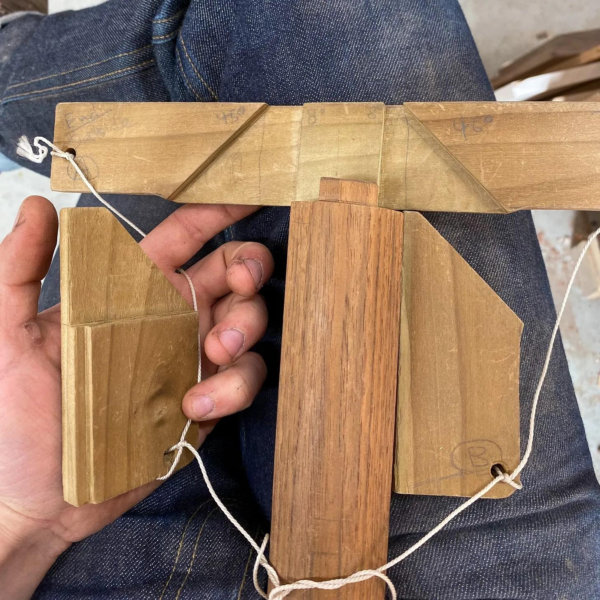
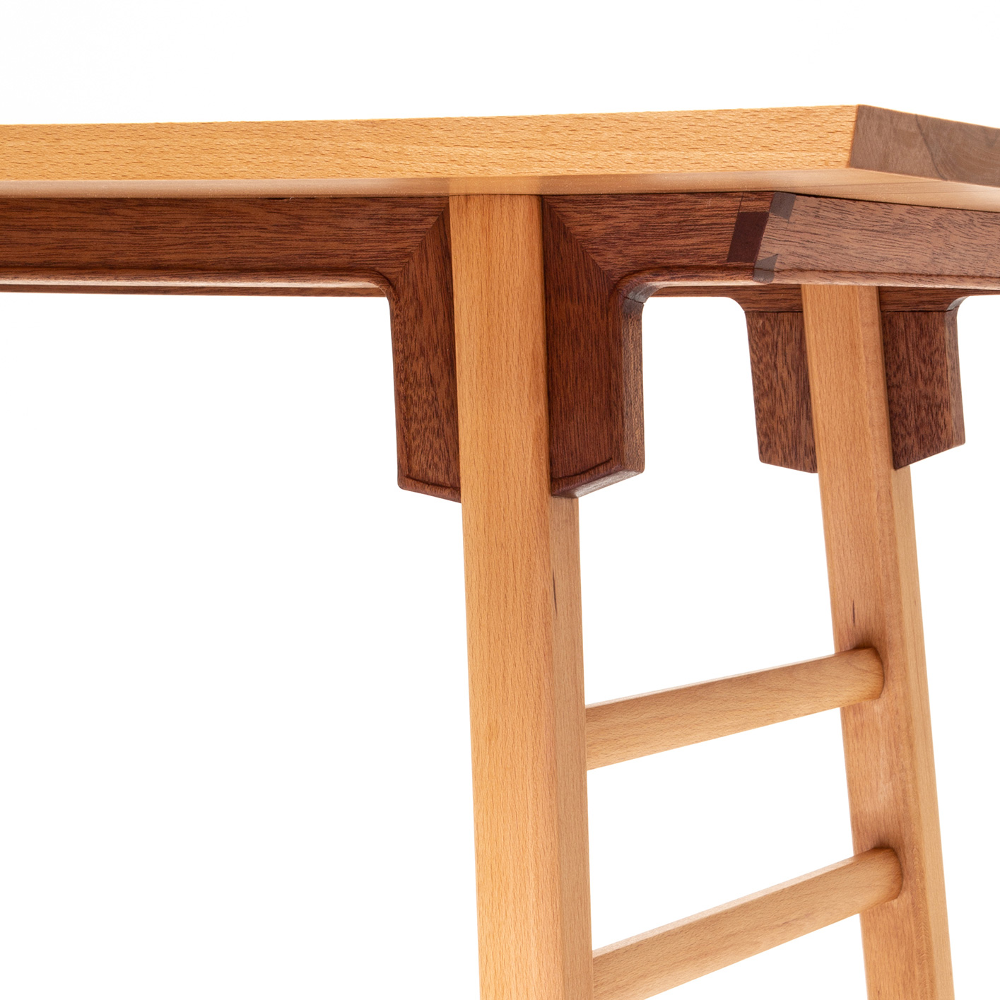

The joinery was cut using a purpose-built tablesaw jig and flat-top blade, producing zero-clearance cuts and repeatable registration. Treated as a “mechanical chisel,” the tablesaw here follows the logic of hand tools rather than mass-production tooling, allowing angled joints of any degree to be introduced through simple, adjustable fixtures.
←

The result is a joint that achieves precision through geometry rather than force. Tight in assembly, fully reversible, and designed for repeated disassembly during transport, repair, or reuse.
↓

Sustainability, here, is a question of structure and lifespan rather than material novelty. Ming furniture endured for centuries through precision, repairability, and adaptability—principles this project treats as contemporary design criteria rather than historical artifacts.
→
